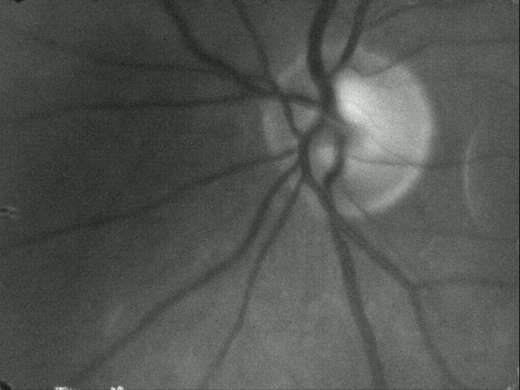

The program is designed to register videoframes with specific content - retinal fundus. The example of such videoframe is shown below. 
The program is using Frangi filter during videoframe preprocessing. The code for Frangi filter can be found here. The program was created using OpenCV 3.2.0 and Qt 5.9.1. To run the program properly, it is necessary to modify phase correlation functions in the OpenCV source before compiling the libraries. Folder OpenCV_phaseCorr contains the files with modified content. If the newer version of OpenCV is used, it is necessary to implement changes shown in those files.
Some of them were created in the online tool Vectr. The rest was created in GIMP.